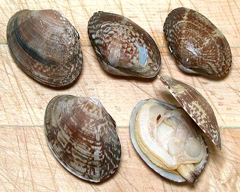

Manilla Clams

[Japanese Littleneck; Venerupis philippinarum]
These clams were accidentally introduced in the Pacific Northwest of
the U.S. and Canada when Pacific Oysters were brought from Japan. They
quickly became an invasive species but are now so popular a harvest both
commercially and recreationally that the fishery is highly regulated.
These clams are also an aquaculture crop and are harvested at various
sizes from 1-1/4 inch to 2-1/2 inches. The main problem with this crop is
slow growth, taking over 3 years to reach harvest size. The photo
specimens were typically 1.9 inches the long way by 1.4 inches and 0.8
inch thick - 28 clams to the pound.
More on Bivalve Mollusks.
Given the difference in cost per ounce (see Yield below), why would
anyone buy Manilla Clams in the shell? Well, a couple of reasons. First
because they are so tender and delicious freshly steamed, and, if you're
clever you can capture the equally delicious fresh clam juice. The second
reason is fancy presentation. Many seafood soups and stews expect tiny
clams in the shell as one of the ingredients.
Buying:
Here in Los Angeles, all the Asian markets
have these. The Chnese / Vietnamese markets usually have them in
live tanks. The Philippine markets usually have them on ice. They
are relatively expensive (see "Yield" below).
Storage:
These clams can be kept in the refrigerator
a week or so. They should be in an open container so they can breath,
and covered with a damp cloth to keep humidity high.
Yield:
A pound of clams will yield about 3 ounces of
meat (19%). At the current price (2013) of $3.99 / pound that comes to
just over US $21 per pound of meat. Frozen "Manilla Clam Meat" or
"Short Neck Clam Meat" (whole shucked clams) runs between $2.99 and $3.99
in the Asian markets here in Los Angeles. I have also bought them (as
"Short Neck Clams") cooked in the shell and frozen in the cooking juice
at $3.99 for 2 pounds, yielding $9.12 per edible pound.
sf_bvmanilz 130713 - www.clovegarden.com
©Andrew Grygus - agryg@clovegaden.com - Photos on this
page not otherwise credited are © cg1 -
Linking to and non-commercial use of this page permitted